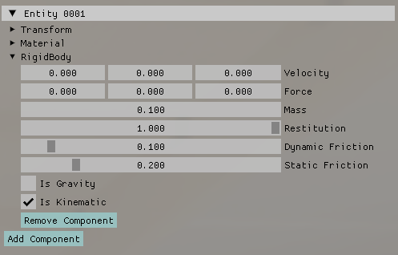

ゲームエンジン開発：物理ベースレンダリング編
ゲームエンジンでは、今のところ下記の手法によるレンダリングを実装しています。
物理ベースレンダリング
物理ベースレンダリングとは物理法則に基づいた数式を使って、光の挙動をモデル化したレンダリング手法です。物理法則をベースとしているため、リアルな物体を描写できますが、その分計算量も多くなります。
IBL
物理ベースレンダリングしても必ずリアルな描写が得られるとは限りません。3DCGではライティング（光や照明の設定）も重要となってきます。IBL(Image-based Lighting)は、現実の風景画像を光源として使用する手法です。画像を用いることで現実世界に近いライティングを簡単に得ることができます。
Materialの設定
物理ベースレンダリングでは基本的に以下のパラメータを調整してマテリアルを表現します。
- Albedo：物体の色
- Metallic：金属光沢
- Roughness：表面の粗さ
これらのパラメータはGUIから調整することができます。
AO（アンビエントオクルージョン）は、テクスチャマテリアルの時に必要になるパラメータで、今回は使っていません。